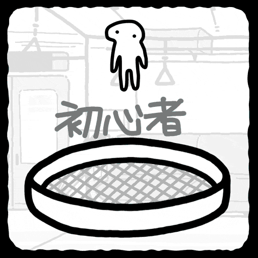

PROJECT / C# / Unity / ADV
1.まず、あなたにはヒトを〇してもらいます。
人間を「裏ごし」し、残された大切なモノから人物の背景を読み解くストーリーADV。3名のチームでメインプログラマーを担当。
Unity1週間ゲームジャム お題「うら」

開発情報
- 使用技術
- C# / Unity
- 制作期間
- 1週間
- イベント・支援
- Unity1週間ゲームジャム お題「うら」
- 制作体制
- 3名（メインプログラマー1名 / プランナー兼デザイナー1名 / デザイナー1名）
- 担当
- メインプログラマー
ゲームの特徴
人間を「裏ごし」することで残る、大切なモノを手がかりに物語を読み解くストーリーADVです。登場人物の背景と残されたモノを照らし合わせ、その人が何を大切にしていたのかを考えながら進めます。
担当した役割
プランナー兼デザイナー1名、デザイナー1名との3名チームで、メインプログラマーを担当しました。1週間のゲームジャムで制作した作品です。